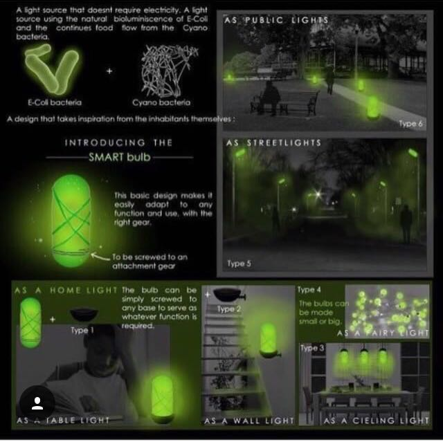
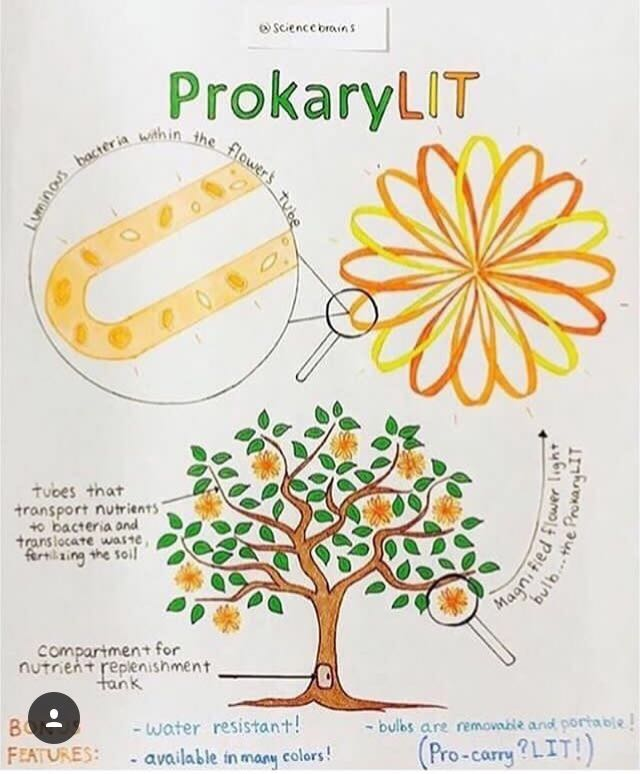
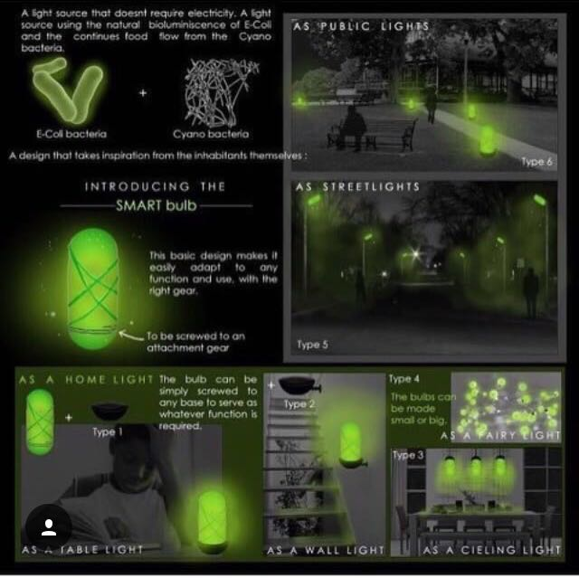
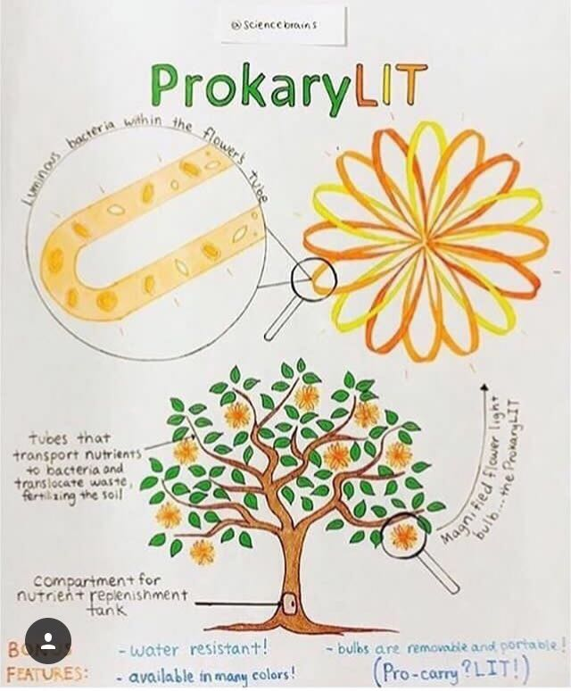

Our vision for Human practices had communication at its hear. We thought a lot about what potential public engagement and integrated practices can have, on both the science and society as a whole.
Some of our highlights involve rethinking the way we communicate science - turning it from passive to an interactive process - so our Game Lab developed - go and see what prototypes and ideas we have developed.
Science Museum
People had their input through our Instagram story.
 



The stakeholders that we have interacted with helped us shape the vision for our light induced technologies. We have also explored how working with people from other disciplines might feel like.
Architects
Designers
City Councils
ESA